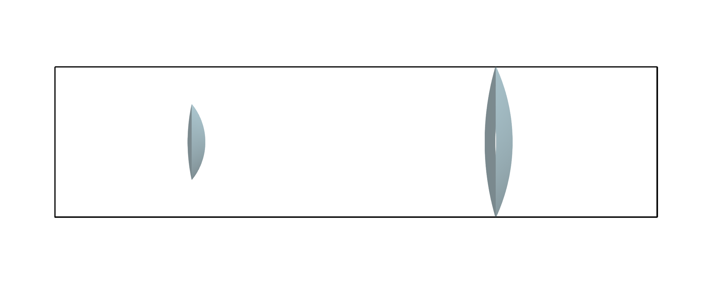
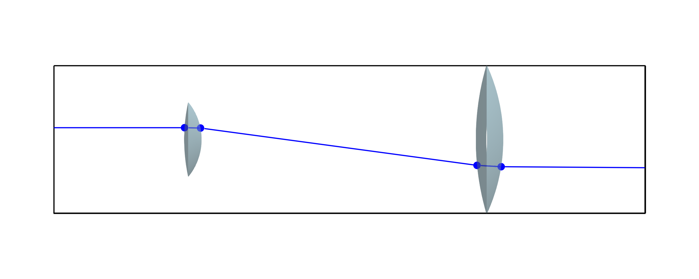
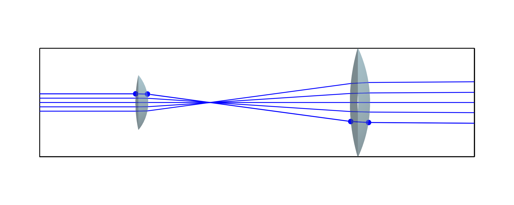
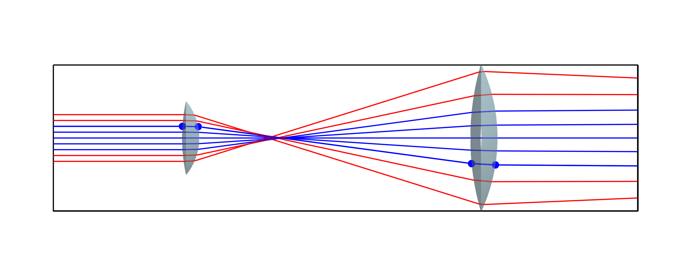

Beam expander
This section will help you to run your first simulation using this package. We will start by modeling a simple Keplerian beam expander. You will learn how to:
- Define a simple
SphericalLensand spawn aBeam - Rotate and translate objects
- Visualize the optical arrangement
- Solve an optical system using geometrical optics
For this tutorial, we will use two thin spherical lenses to magnify a collimated beam.
Defining the lenses
We start by defining two lenses and calculating their analytical focal lengths f1 and f2, which will be required later. The focal length of an ideal thin lens (BeamletOptics.lensmakers_eq) can be calculated via
\[\frac{1}{f} \approx (n_L - 1) \cdot \left( \frac{1}{R_1} - \frac{1}{R_2} \right)\]
where $n_L$ is the lens refractive index and $R_{1/2}$ are the radii of curvature of the front and back spherical surface. In addition, the magnificant of a two lens system can be determined by $M = f_2/f_1$.
using CairoMakie, BeamletOptics
# Lens 1
R11 = 20e-3
R12 = 60e-3
nl1 = 1.5
d1 = BeamletOptics.inch
f1 = BeamletOptics.lensmakers_eq(R11, -R12, nl1)
l1 = SphericalLens(R11, R12, 0, d1, λ->nl1)
# Lens 2
R21 = 60e-3
R22 = 90e-3
nl2 = 1.5
d2 = 2*BeamletOptics.inch
f2 = BeamletOptics.lensmakers_eq(R21, -R22, nl2)
l2 = SphericalLens(R21, R22, 0, d2, λ->nl1)
M = f2/f1
@info "f1, f2, M" f1 f2 M┌ Info: f1, f2, M
│ f1 = 0.03
│ f2 = 0.072
└ M = 2.4where nl is the lens refractive index required for the lensmakers equation. Note that the lens cylinder section thickness is set to zero and that the first lens has a diameter of one inch, whereas the second lens has a diameter of two inches.
Unless specified otherwise, this package assumes SI-units for input parameters.
- i.e.
R11 = 20e-3corresponds to a radius of curvature of 20 mm. nl1 = 1.5corresponds to a unitless refractive index
Further, we have specified constant refractive indices nl1 and nl2. Therefore, it will not matter which wavelength we chose for the ray/beam later on, since $n_L(\lambda) = 1.5$. In general, however, a function $n(\lambda)$ can be passed that models dispersion for different wavelengths, or a DiscreteRefractiveIndex.
Setting up the system and moving elements
We then define that our optical system consists of the lens elements l1 and l2 and move the elements into position using the following translation and rotation commands:
# define system and move elements
system = System([l1, l2])
zrotate3d!(l1, deg2rad(180))
zrotate3d!(l2, deg2rad(180))
translate3d!(l2, [0, f1+f2, 0])Note that the second lens has been moved by the combined focal length f1+f2 along the y-axis. To visualize what we have done so far, we will use the plotting helper functions that are based on the Makie package.
# Plot
fig = Figure(size=(600,240))
aspect = (1,4,1)
limits = (-0.025, 0.025, -0.05, 0.15, -0.025, 0.025)
ax = Axis3(fig[1,1], aspect=aspect, limits=limits, azimuth=0., elevation=1e-3)
hidexdecorations!(ax)
hidezdecorations!(ax)
render_system!(ax, system)
We can see that both lenses have been placed along the (optical) y-axis.
In practice it is recommend to replace Axis3 with a LScene and use GLMakie for a better viewing experience, i.e. ax = LScene(fig[1,1]).
Propagating beams through the system
We will now define a single beam that propagates through our optical system. First, we start by defining a Ray with a starting position and direction that is used to generate a Beam. This beam can then be propagated through the expander using the solve_system! function:
# Propagate a single ray through the system
start_pos = [0, -0.15, 4e-3]
start_dir = [0, 1., 0]
ray = Ray(start_pos, start_dir)
beam = Beam(ray)
solve_system!(system, beam)
render_beam!(ax, beam, show_pos=true)Rendering the beam into the 3D-axis defined above will allow us to see the result:

If we perform this step for different z-values of the ray starting position, we can obtain a collimated ray bundle and look at the magnification of the beam expander:
# Propagate multiple rays through the system
zs = -4e-3:2e-3:4e-3
for z in zs
b = Beam(Ray([0, -0.15, z], [0, 1., 0]))
solve_system!(system, b)
render_beam!(ax, b)
end
Let us also propagate some rays through the outer region of the magnifier. We will color them red.
# Propagate rays through edge region
zs = 6e-3:2e-3:8e-3
for z in cat(-zs, zs; dims=1)
b = Beam(Ray([0, -0.15, z], [0, 1., 0]))
solve_system!(system, b)
render_beam!(ax, b, color=:red)
end
It can be observed that these beams are not collimated after the magnifier, but rather focused. This is due to the effect of spherical abberations.